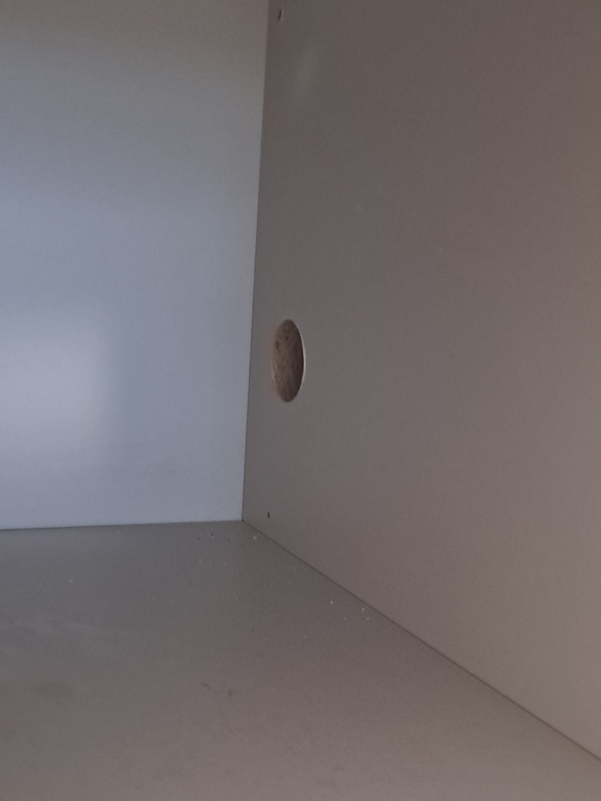
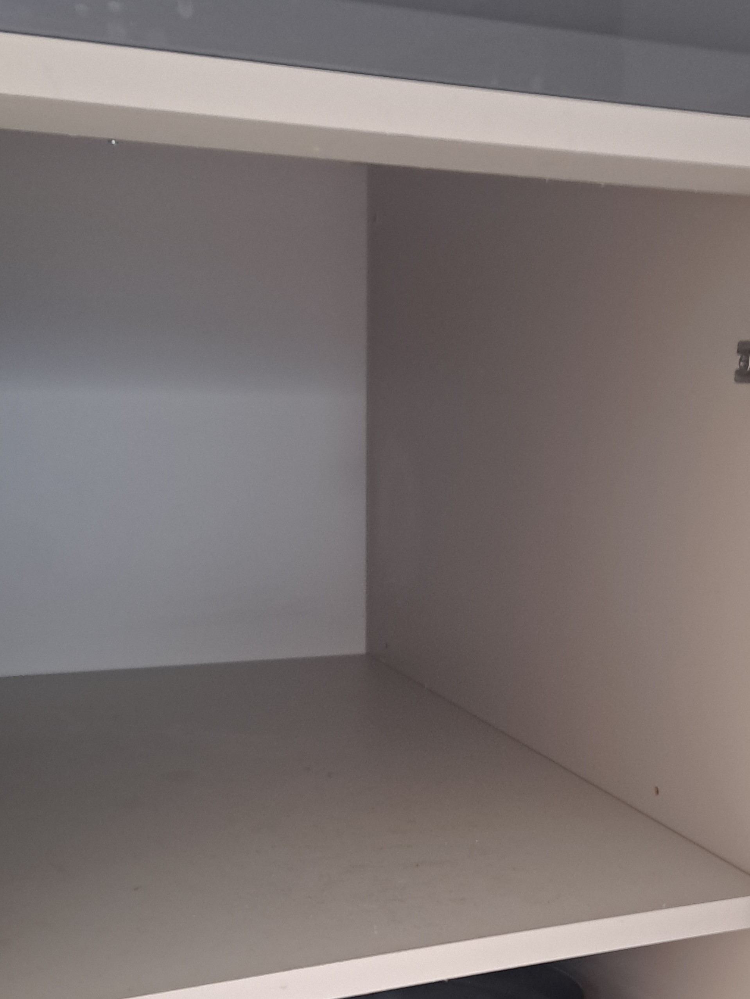

기존 하부장 유지
사용 가능한 싱크장을 유지하면서 필요한 부위를 보수합니다.
이사를 위해 식기세척기를 철거한 뒤 싱크대 하부장에 배관 구멍이 남아 보수를 요청하셨습니다. 하부장을 새로 제작하는 비용과 작업 부담 때문에 고객님은 기존 싱크장을 살리는 합리적인 부분복원을 선택하셨습니다.

사진에서 하부장 내부 측판의 원형 구멍이 확인됩니다. 구멍 크기와 판재 상태를 살피고 주변 면의 높이, 색상과 마감을 맞추는 것이 중요한 작업입니다.
사용 가능한 싱크장을 유지하면서 필요한 부위를 보수합니다.
작은 배관 구멍 때문에 하부장을 새로 만드는 부담을 줄일 수 있습니다.
철거 후 남은 구멍을 보수해 원상복구를 준비합니다.
손상 범위가 제한적이라면 철거와 교체 범위를 줄일 수 있습니다.
판재 재질과 구멍 크기, 손상 상태에 따라 세부 보수 방법을 정합니다.
주변을 보호하고 구멍 크기와 판재 상태를 살핍니다.
구멍 주변의 약해진 부분과 이물질을 정리합니다.
판재 상태에 맞춰 구멍을 보강하고 보수합니다.
주변 면과 높이를 맞추고 기존 표면 색상을 고려해 마감합니다.
경계와 표면 상태를 확인하고 주변을 정리합니다.
하부장을 새로 제작하지 않고 식기세척기 배관 구멍을 부분보수했습니다. 이번 현장의 작업시간은 약 1시간 30분입니다.

“블로그 보다 실력 진짜 좋으시다 생각했는데, 수리받고 보니까 진짜 금손이시네요! 마술같애요~깔끔하게 고쳐주셔서 이사도 걱정없네요^^감사합니다!”
| 비교 항목 | 부분복원 | 하부장 새 제작 |
|---|---|---|
| 비용 | 국소 구멍은 비교적 부담이 적음 | 제작·철거·설치 비용이 발생 |
| 작업시간 | 손상 상태에 따라 비교적 짧음 | 실측과 제작·설치 일정 필요 |
| 생활 불편 | 작업 범위를 줄일 수 있음 | 내부 물품 이동과 철거·설치 공간 필요 |
| 완성도 | 기존 판재의 색상과 표면에 맞춰 보수 | 새 자재로 제작해 설치 |
| 효과 | 배관 구멍을 보수하고 기존 하부장 유지 | 넓은 손상이나 노후 하부장을 함께 교체 |